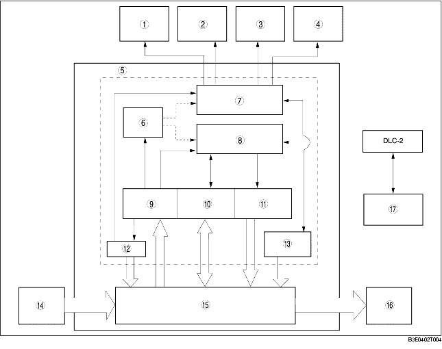

• The on-board diagnostic system consists of a malfunction detection system that detects abnormalities in input/output signals when the ignition switch is at the ON position, a data monitor function that reads out specified input/output signals and a active command modes function that allows for override operation of output parts (such as solenoid valves).
• The data link connector 2 (DLC-2), which groups together all the connectors used for malfunction diagnosis and detecting/repair into a single location, has been adopted, thereby improving serviceability. Diagnosis is performed by connecting the WDS or equivalent to the DLC-2.
• In addition to DTC read-out, the WDS or equivalent is used to clear DTCs using the display screen of the diagnostic tester, and to access the PID/data monitor and active command modes functions, providing enhanced malfunction diagnosis and improved serviceability.

.